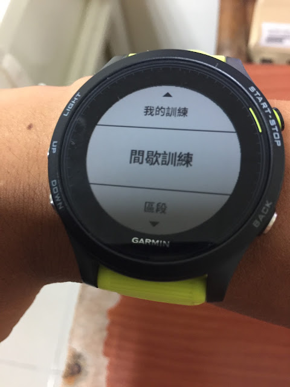
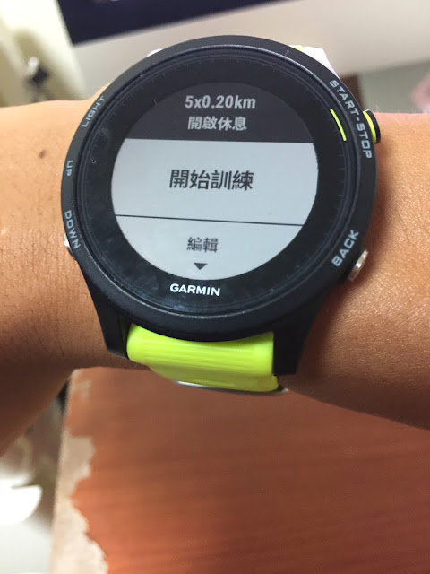

Garmin 花蓮移地訓練之七星潭速度訓練
去年跟 Jason 與小妞在談明年度的課程時，他們說想辦點不一樣的。我記得小妞說「想看看國峰平時訓練的場地」，因此就有了這次花蓮的移地訓練。我對此課程的想像是：在自然美景中用身體移動身體、不只是在風景區觀光，而是投入其中訓練，透過訓練融入地景，並留下自己的一部分(汗水)。
花蓮很大，但我只有兩天的時間，「該怎麼把我眼中的花蓮介紹給大家又同時能學到東西呢？」這是我接到這個任務後，常在腦中思考的問題。
--
移地訓練第一天早上，我特別安排了花蓮最有名的觀光景點之一：七星潭。許多人來到七星潭只是看一看海，拍拍照就走了，但我每次來到七星潭都覺得這裡是練跑的絕佳場所，有綿延好幾公里的石礫路可以練跑，而且岸上又有一條平坦的自行車道；在我眼中，這是最好的技術訓練場所了。
大部分的跑者應該很少有機會在極不穩定的石礫路面上跑步，但只要能在石礫上跑上一段距離，再回到正常路面上的跑感就會非常好。況且，七星潭邊海天一線、山海相交，邊跑邊聽著海浪拍打石礫與自己的腳掌落地的沙沙聲，兩種節奏交錯，頗有天人合一之感。

當然，最重要的是這種訓練的目的：使大家明白「速度是怎麼來的？」速度不只是因為有強大的體力與肌力，光是技術(動作)知覺的改變就可以使你跑得更快更輕鬆。所以這次透過 Garmin 的跑錶中的「間歇訓練」功能來直接印證「技術」與「速度」之間的關係：

我先請大家設定好 200m 的間歇，休息時間選擇「開放」=意指不設時間，按分段鈕後才開始下一趟。第一趟是在正常的柏油路面上直線加速跑 200 公尺，在石礫路面上跑 1 公里之後；接著第二趟是在石礫路面上加速跑 200 公尺，第三趟再回到柏油路面上。每一趟中間穿插「落下」的技術訓練動作，這些動作對某些人的效果特別好，像是小傑的三趟 200m 就從 33 秒→29 秒進步到最後一趟的 27 秒，事後找他聊時，他說：最後一趟反而覺得輕鬆，沒想到速度更快。這正是我們要追求的技術：用更輕鬆的感覺跑出同樣(或更快)的速度。
以其他人為例，像是 Amos 跑出 38→36→32；Richard 跑出 55.5→45.9→41；孟儒跑出 39→37→34；Upton 跑出 39.3→35→33，體力在後面幾趟已變差了，還能更快正代表著技術知覺的進步。
當然，還是有些人的效果沒有那麼顯著。原因是疲勞或太熱，當身心疲累時，注意力無法集中，技術知覺也會變差，所以體力當然還是很重要的，它是技術的支柱。
--
這種石礫/沙灘與柏油路面交替的訓練方式可以使跑者明顯感受到自己「主動落地」、「下踩」、「推蹬」、「抬膝」等偏差動作。很多時候，就算教練講再多，跑者也很難體會該怎麼調，但一跑上石礫路面時，若腳很容易陷下去就代表上述的其中一項錯誤發生，但跑過一段時間後(要在還沒很累之前，所以我要求在跑第二趟兩百前只在石礫上跑 1 公里)，身體會自然找到不陷入的方法；相較之下，有些人在石礫路面上跑起來比較輕快的跑者，代表他沒有上述的偏差動作，而且體重向前轉移的速度較快(觸地時間短)，這類跑者的第一趟與第二趟的成績就會差比較少。例如淑苓、盈翔、Upton Y. Lin、老翁、素妃即屬這一類(在柏油路面與石礫面上的成績差距在 20 秒以內)。
換句話說，兩趟差距愈大，代表多餘的動作愈多，但同時改善/進步空間也愈大。就算對原本差距較小的跑者來說，在石礫面上跑的效用也很大，利用這種路面能開發敏銳的知覺。在《跑步，該怎麼跑？》的第三十一章就有詳細解釋沙灘練跑的好處：
「在沙灘上時你不太可能向前跨大步來跑。如果你在練習姿勢法時碰到許多困難，像老是用腳跟著地、滾動腳掌（腳掌與地面的接觸點從腳後跟到足弓再到腳尖的跑法）、蹬地把身體往前推。你會發現在沙灘上練跑時，這些改不掉的壞習慣很快就被克服了。你可以藉此去『感覺』正確的跑步技術。因為在沙灘上，如果你還是用腳跟著地、滾動腳掌，最後又企圖蹬地向前的話，你的每一步都必然使腳掌深陷沙中。但如果你每一步都輕輕點地，腳掌一著地就抬起來，以姿勢法所強調的高步頻來跑時，腳掌就不會陷得太深，你將可以在沙灘上輕快地向前跑。」(頁 202~203)